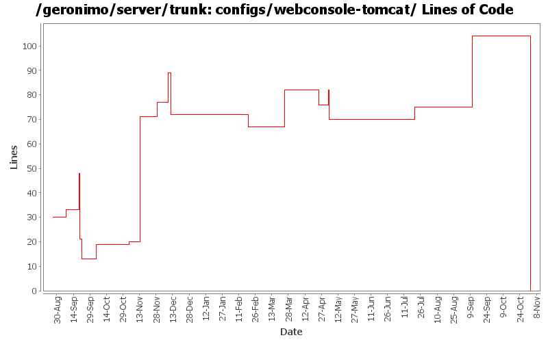

[root]/configs/webconsole-tomcat
 src
(0 files, 0 lines)
src
(0 files, 0 lines)
 main
(0 files, 0 lines)
main
(0 files, 0 lines)
 plan
(0 files, 0 lines)
plan
(0 files, 0 lines)
 resources
(0 files, 0 lines)
resources
(0 files, 0 lines)
 META-INF
(0 files, 0 lines)
META-INF
(0 files, 0 lines)
 plan
(0 files, 0 lines)
plan
(0 files, 0 lines)
 site
(0 files, 0 lines)
site
(0 files, 0 lines)

| Author | Changes | Lines of Code | Lines per Change |
|---|---|---|---|
| Totals | 33 (100.0%) | 231 (100.0%) | 7.0 |
| djencks | 7 (21.2%) | 89 (38.5%) | 12.7 |
| vamsic007 | 1 (3.0%) | 51 (22.1%) | 51.0 |
| jdillon | 6 (18.2%) | 33 (14.3%) | 5.5 |
| pmcmahan | 5 (15.2%) | 22 (9.5%) | 4.4 |
| jbohn | 4 (12.1%) | 14 (6.1%) | 3.5 |
| chirino | 1 (3.0%) | 8 (3.5%) | 8.0 |
| jlaskowski | 1 (3.0%) | 6 (2.6%) | 6.0 |
| kevan | 3 (9.1%) | 5 (2.2%) | 1.6 |
| prasad | 3 (9.1%) | 1 (0.4%) | 0.3 |
| hogstrom | 1 (3.0%) | 1 (0.4%) | 1.0 |
| dain | 1 (3.0%) | 1 (0.4%) | 1.0 |
GERONIMO-3565. Configs distributed amongst framework/configs and plugins
0 lines of code changed in 2 files:
Clean up a lot more configs so geronimo-plugin.xml is reasonable. Make use of local maven repo more likely to work. Trim framework down to actual minimal size.
29 lines of code changed in 1 file:
* updated copyright date to 2007
1 lines of code changed in 1 file:
Changed trunk to 2.1-SNAPSHOT
1 lines of code changed in 1 file:
GERONIMO-3338 Add Xerces dependency to admin console. Castor requires it
5 lines of code changed in 1 file:
GERONIMO-3138 seems to require tomcat webconsole to have an orb available
8 lines of code changed in 1 file:
GERONIMO-3131 GERONIMO-3132 GERONIMO-3133 GERONIMO-3134 Defaults for persistence units. Supply locations of jars with persistent classes to the PersistenceUnitInfo. Match a ref with not persistence unit specified to a unique match. Allow wars to have jndi references pointing to the war module, not just the ear
7 lines of code changed in 1 file:
GERONIMO-3051 Fix DB Viewer portlet error - patch from Frank G with a tweak to the jasper builder so things will build
1 lines of code changed in 1 file:
GERONIMO-2965 GERONIMO-3008 GERONIMO-3010 Tomcat annotation processing with lots of other improvements. Uses LifecycleProvider interface proposed in GERONIMO-3010
16 lines of code changed in 1 file:
r6663@Bliss: jason | 2007-03-18 15:28:48 -0700
Branch for server/trunk re-org
r6664@Bliss: jason | 2007-03-18 15:38:19 -0700
New parent dir
r6665@Bliss: jason | 2007-03-18 15:41:22 -0700
new dir
r6666@Bliss: jason | 2007-03-18 15:48:27 -0700
Repackage amq stuff into org.apache.geronimo.activemq
r6667@Bliss: jason | 2007-03-18 15:57:00 -0700
Rename geronimo-activemq-gbean* modules to geronimo-activemq*
r6668@Bliss: jason | 2007-03-18 16:00:24 -0700
Fixing up packages
r6669@Bliss: jason | 2007-03-18 16:03:31 -0700
Drop gbean package
r6670@Bliss: jason | 2007-03-18 16:52:18 -0700
Update references to new activemq module names
3 lines of code changed in 1 file:
Normalize all configs/*/pom.xml headers
14 lines of code changed in 1 file:
Upgrade to Castor 1.0.5
1 lines of code changed in 1 file:
GERONIMO-2804 implement JSF support
- update the myfaces snapshot jars to avoid ELContext problem in its resolvers
- remove references to commons-taglibs where not needed or replace with references to jstl/jstl
- enable myfaces context listener in tomcat by providing new gbean property. tomcat's
default method for finding listeners in TLDs doesn't work with Geronimo's multiparent classloader.
- add org.apache.myfaces and org.apache.taglib to non-overrideable classes for webapps
- enable TLD processing in jetty context so that it can find the myfaces listener
- squelch spurious WARN messages from myfaces configuration startup
0 lines of code changed in 1 file:
GERONIMO-2536 moved dependency on jstl to web containers and web-2.5-builder and removed dependencies from console poms and deployment plans. Not sure if this is the best approach but it can be changed later if necessary.
0 lines of code changed in 1 file:
change "tomcat" artifactIds to "tomcat6" for :
configs/tomcat6
configs/tomcat6-deployer
modules/geronimo-tomcat6
modules/geronimo-tomcat6-builder
assemblies/geronimo-tomcat6-jee5
assemblies/geronimo-tomcat6-minimal
updated various poms, deployment plans, and plugin-metadata.xml files to reference the new tomcat6 artifactId
2 lines of code changed in 1 file:
GERONIMO-2536 moved reference to java.net repository to individual components from root pom.xml
Still need to remove dependencies from console configs so they are included when deployed.
12 lines of code changed in 1 file:
GERONIMO-2536 Update jetty6 and tomcat jee5 assemblies to include jstl 1.2 from glassfish
Also update jspc-maven-plugin to 1.4.7-SNAPSHOT to pick up jgenender's inclusion of jasper 6 (Thanks Jeff)
1 lines of code changed in 1 file:
GERONIMO-2628 - upgrade to tomcat 6.0.2 beta
changes:
* modules/geronimo-tomcat
** add repository http://people.apache.org/~pmcmahan/maven2/ to pom
*** this will be removed when tomcat publishes v6 artifacts
** update pom to use tomcat 6.0.2 beta jars
** remove outdated clustering (o.a.g.tomcat.cluster)
** update resources in src/main/resources/META-INF/geronimo-tomcat/var/catalina
** update dependencies in src/main/resources/META-INF/geronimo-dependency.xml
** update test cases
** disabled a test case that fails intermittently
* modules/geronimo-tomcat-builder
** remove outdated references to clustering support
** update test cases
* configs/tomcat
** add repository http://people.apache.org/~pmcmahan/maven2/ to pom
*** this will be removed when tomcat publishes v6 artifacts
* configs/webconsole-tomcat
** remove dependencies on jasper-runtime from pom.xml and plan.xml
* configs/jee5-specs
** use servlet 2.5, jsp 2.1, el 1.0, annotation 1.0
* configs/tomcat-deployer
** update pom.xml to use new web25-builder
* assemblies/geronimo-tomcat-j2ee
** rename to geronimo-tomcat-jee
* test cases
** add new unit test for servlet 2.5 to geronimo-tomcat
* remove unnecessary reference to jasper-runtime from poms using jspc-maven-plugin
** console
** demo
** ca-helper
** jsp-examples
** ldap-demo
** remote-deploy
** uddi-server
** welcome
** magic GBall
5 lines of code changed in 1 file:
GERONIMO-2537 Merge from branches/1.2 onto trunk. I have not reviewed trunk license info. So, it's possible that there are already some deltas which should be reflected in license/notice files. This change updates the general LICENSE.txt and NOTICE.txt files. Note that I've expanded the notice/license files in the root of a source distribution. Also added required copyright to NOTICE.txt files. Note that minimal distributions have an overly broad license/notice files. Also, we have multiple copies of the same general license/notice files. Would be good to reduce these.
0 lines of code changed in 2 files:
GERONIMO-2602,GERONIMO-2603 Fix scope overloading. Make only transitive dependencies
visible to PackageMojo (geronimo running on maven repo)
8 lines of code changed in 1 file:
Changed version to 2.0-SNAPSHOT
1 lines of code changed in 1 file:
GERONIMO-2482 Remove console JARs from WEB-INF/lib
51 lines of code changed in 1 file:
GERONIMO-2537 All Geronimo source files must be brought in line with the new ASF source header and copyright notice policy
The rest of Geronimo sources migrated
6 lines of code changed in 1 file:
Using ${version} instead of ${pom.version} in a feeble attempt to get around ${pom.version} changing to its timestamp version for SNAPSHOT artifacts
15 lines of code changed in 1 file:
GERONIMO-2425 and GERONIMO-2398 make the DConfigBeans and releated classes available to web console
18 lines of code changed in 1 file:
remove duplicate dependency from webconsole-tomcat pom.xml
0 lines of code changed in 1 file:
GERONIMO-2398 Create transaction and connector-deployer configs, clean up a lot of dependency problems, and fix major app client module builder classloader bugs
3 lines of code changed in 1 file:
GERONIMO-2406
15 lines of code changed in 1 file:
Applying patch GERONIMO-2364
8 lines of code changed in 1 file:
(GERONIMO-2162) Use same directory as artifactId for configs/*
0 lines of code changed in 2 files: